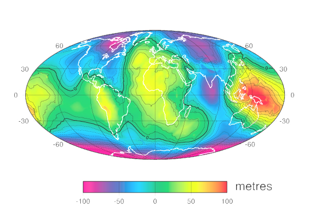

L4 Geophysics Lab Sessions
Help, tips and answers to FAQs
Lab 1: Standard gravity anomalies and corrections
Lab 2: Forward modelling-buried spherical object
Lab 3: Forward modelling-fitting models to real data
Lab 4: Forward modelling-semi infinite slab model
Lab 5: Application to real world problem-Tibetan Plateau
